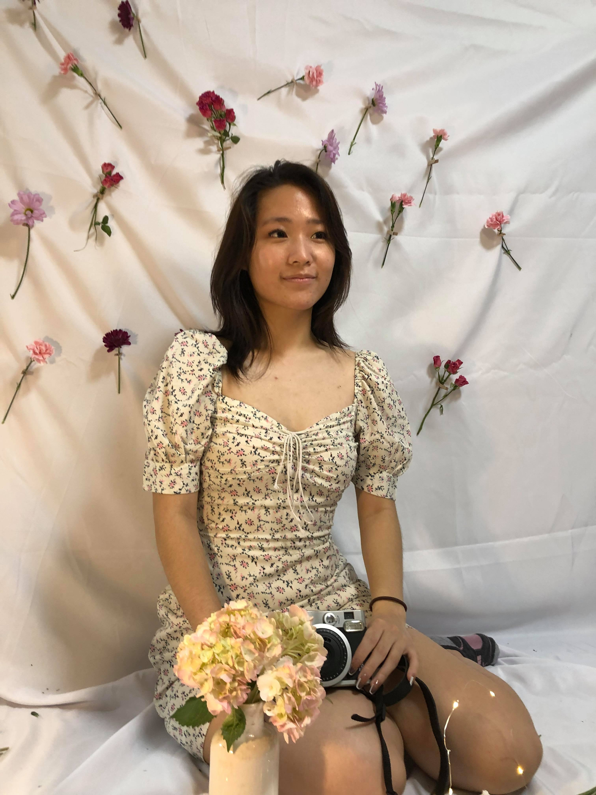
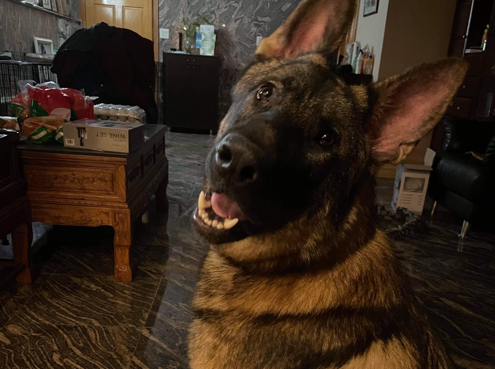
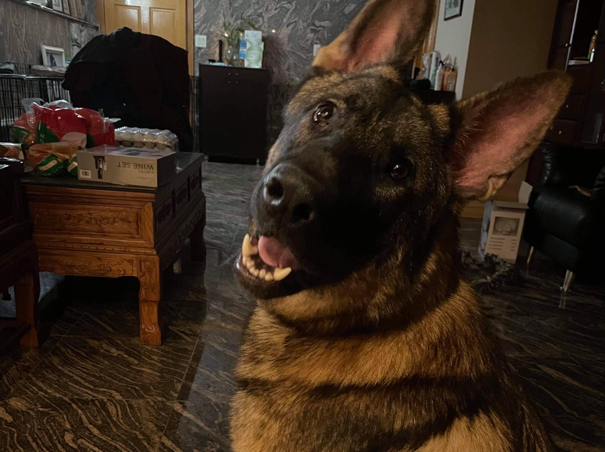

Welcome! My name is Sharon Ren, and I am currently a second year student at Carnegie Mellon, studying Business Administration with a desired double major in Human-Computer Interaction and a desired minor in Computer Science. I love learning new things, UX design, and most importantly, my dog, Peter! Feel free to click around and learn all about me :)
Below, you will see a few snapshots of my life in college. The two group pictures are of me with my dance team, Helix Dance Crew, and me with my KPL Class. Finally, I have a cute picture of Peter!

 
